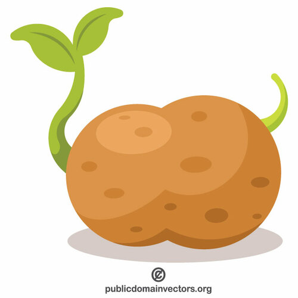

Detectives de plantas
Existe una gran variedad de plantas y todas tienen en común que fabrican su propio alimento, pero su aspecto puede ser muy distinto.
Para crecer utilizan agua y sustancias minerales del suelo, luz solar y un gas del aire, el CO2 (dióxido de carbono). ¿Cómo consiguen todo esto?
El agua se encuentra en el suelo, por lo que las plantas necesitan órganos para absorberla. También tienen que captar la luz del sol, y para ello necesitan crecer y crear una estructura que las sostenga.
Estas necesidades hacen que sus células estén organizadas formando tejidos que, en la mayoría de ellas, forman órganos especializados para relizar diferentes procesos vitales como son las hojas, los tallos y las raíces. La excepción son los musgos y otras plantas similares, que tienen tejidos pero carecen de órganos especializados.
Ahora tú. Características y funciones de hojas, tallos y raíces
Actividad 1. Nos informamos
¿Qué función tiene cada una de estas partes?
La información mostrada en los enlaces anteriores también está disponible en un archivo de texto editable Órganos de las plantas con flores: hoja, tallo y raíz.
Actividad 2. ¿Qué parte nos comemos?
¿Podemos poner cinco ejemplos de semillas, raíces o tallos que nos comamos?
- En esta actividad vamos a identificar la parte de la planta que consumimos cuando comemos determinados alimentos.
- En un documento, creado en Google Drive o en nuestro cuaderno de clase, colocamos en el lugar que le corresponda las especies mostradas en esta imagen. Insertaremos también de cada una de ellas una imagen que localicemos en Internet.
- Plantilla de la actividad "¿Qué parte nos comemos?".
- Nos informarnos en Internet u otras fuentes. Para realizar búsquedas en Google será de utilidad el documento
 "Recomendaciones de búsqueda en Google".
"Recomendaciones de búsqueda en Google". - Para buscar imágenes tendremos en cuenta el documento "Cómo buscar imágenes con licencia CC en Internet".
- Nuestro trabajo será evaluado con
 la rúbrica de informe individual.Actividad 3: nos informamos
la rúbrica de informe individual.Actividad 3: nos informamos
Actividad 3: nos informamos
Aquí tienes un ejemplo de cuatro tipos de tallos si quieres conocer más sobre ellos puedes pinchar aquí
|
BULBO Licencia: Dominio público |
TUBÉRCULOS Licencia: Dominio público |
Recordamos lo aprendido
Selecciona las respuestas correctas y pulsa sobre el botón "responder"
Comprobamos lo aprendido
Aquí te dejo un enlace con un formulario de google en el que vas a poder comprobar lo que has aprendido del tema. Ya sabes que al finalizar la prueba tendrás tu puntuación. Suerte
Ahora en equipo. Reporteros del entorno vegetal
Actividad 3
¿Te has dado cuenta de la cantidad de árboles diferentes que hay en tu instituto y en tu barrio? ¿Cuántos conoces?
Vivir en un entorno urbano nos separa del conocimiento del entorno natural cotidiano. Vivimos entre asfalto, pero podemos al menos descubir muchos aspectos de las plantas que nos rodean.
¿Qué vamos a hacer?
Vamos a realizar un artículo divulgativo de carácter científico sobre las plantas de nuestro entorno. Una vez finalizado, lo expondremos a nuestros compañeros que lo evaluarán.
1.- Entrevistamos a familiares y vecinos sobre las plantas existentes tanto en sus hogares como en el barrio, les preguntamos sobre los siguientes aspectos:
- Nombres, características, cuidados que precisan…
- Costumbres y tradiciones de épocas anteriores relacionadas con las plantas: plantas que antes existían y que han ido desapareciendo, qué objetos se empleaban para su cuidado y de qué materiales estaban hechos, canciones que cantaban nuestros padres, abuelos... en situaciones cotidianas y que aludían a las plantas, dichos y refranes populares, etc.
2.- Entrevistamos a los trabajadores municipales de jardinería sobre la labor que llevan a cabo.
¿Cómo lo haremos?
Lo haremos siguiendo estas pautas:
- Lo haremos en soporte digital o en papel y debe tener un título que despierte el interés del lector.
- Visualizaremos en primer lugar el vídeo
 Escribir y evaluar artículos científicos.
Escribir y evaluar artículos científicos.
- Tendremos en cuenta las recomendaciones de la Guía para escribir un artículo periodístico.
- Tomaremos fotos, con nuestro móvil o cámara, tanto de las personas entrevistadas como de las plantas, de modo que nuestro reportaje resulte lo más atractivo posible. También podemos hacer uso de la grabadora de voz del móvil para las entrevistas.
- Podemos buscar información e imágenes en Internet si es preciso. Nos serán de ayuda los enlaces que aparecen en el apartado "Recursos".
Evaluamos
Nuestro reportaje será evaluado por los otros equipos mediante  el cuestionario de coevaluación. Es conveniente que lo tengamos en cuenta para su realización.
el cuestionario de coevaluación. Es conveniente que lo tengamos en cuenta para su realización.
Para terminar, valoraremos las sugerencias de mejora que nos hagan, haremos los cambios que nos parezcan interesantes y, sobre todo, no olvidaremos agradecer a nuestros compañeros su ayuda. Una vez evaluado y corregido, lo compartiremos en redes sociales o lo insertaremos en el blog o web de nuestro centro.
Ahora en equipo. ¿Qué arbol es ese?
Actividad 4
¿Qué vamos a hacer?
Tenemos una forma muy eficaz de identificar plantas, se trata de usar en nuestro móvil una app denominada ARBOLAPP. Ha sido creada por el  CSIC en colaboración con el
CSIC en colaboración con el  Real Jardín Botánico e incluye 118 especies de árboles silvestres de la Península Ibérica y las Islas Baleares.
Real Jardín Botánico e incluye 118 especies de árboles silvestres de la Península Ibérica y las Islas Baleares.
Una gran ventaja es que funciona sin conexión a Internet para que podamos perdernos por parques y bosques mientras jugamos a ser detectives de plantas. En este vídeo nos explican cómo usarla.
Con su ayuda vamos a realizar la propuesta didáctica ¿Qué árbol es ese? para familiarizarnos con la identificación de especies arbóreas de nuestro entorno y con las principales palabras clave que las definen. Para clasificarlos, emplearemos como criterios comunes la forma de la raíz, de las hojas y los tallos así como la flor y el fruto.
Pasos a seguir
- En nuestro móvil nos descargamos
 Arbolapp (disponible en inglés y castellano para iOS y para Android).
Arbolapp (disponible en inglés y castellano para iOS y para Android). - Salimos al campo, parque o jardín, y cada equipo intenta identificar al menos tres especies.
También podemos llevar a cabo la actividad en el aula accediendo a la página web de Arbolapp. - Para ello debemos comparar los caracteres observados con los que figuran en las búsquedas y tomar decisiones para seguir avanzando.
- La app nos permite realizar búsquedas ABIERTAS y GUIADAS. En todo momento usaremos el sistema de búsqueda que nos parezca más conveniente.
- Cada especie cuenta con un mapa de distribución, una breve descripción y una o varias fotografías.
- Siempre que surjan dudas respecto a los términos botánicos utilizados en Arbolapp, debemos consultar su definición en el glosario.
Plantillas de trabajo
Para describir nuestras búsquedas usaremos las siguientes plantillas:
En las plantillas indicaremos:
- Los pasos que hemos seguido en Arbolapp, para el tipo de búsqueda que hayamos realizado.
- La justificación de por qué hemos elegido cada uno de los pasos hasta llegar a la identificación de la especie.
- Nuestra hipótesis de partida (opcional).
- En las plantilla también debemos:
- Responder una serie de cuestiones sobre la app y el sistema de búsqueda.
- Elalaborar una lista de los caracteres que nos han ayudado a identificar cada especie.
- Describir la especie e insertar una foto tomada con nuestro móvil o cámara.
- Contar curiosidades, leyendas y otros aspectos de las especies investigadas que nos llamen la atención . Podemos para ello leer las secciones "Sabías que" y "Más información" de la app.
Comunicamos resultados y evaluamos
Al terminar la actividad, los distintos equipos presentaremos nuestras especies ante la clase. Se trata de hacer una breve exposición oral apoyándonos en nuestras plantillas. Para prepararla, puede venirnos muy bien esta presentación que muestra buenas recomendaciones para hablar en público.
Serán nuestros compañeros de clase quienes evalúen nuestras exposiciones orales a través del  "Cuestionario para valorar la exposición oral".
"Cuestionario para valorar la exposición oral".
Las fichas de identificación elaboradas a partir de las plantillas serán valoradas por el docente teniendo en cuenta los indicadores de la rúbrica  "¿Qué árbol es ese?" Así que, es conveniente que la tengamos en cuenta para la realización de nuestro trabajo.
"¿Qué árbol es ese?" Así que, es conveniente que la tengamos en cuenta para la realización de nuestro trabajo.
Hemos terminado esta sección y es el momento de ir añadiendo las palabras nuevas a nuestro GLOSARIO
Diario de aprendizaje
- En el Diario de aprendizaje de nuestro portafolio individual haremos una nueva entrada que tendrá por título "Detectives de plantas".
- La escribiremos en nuestro cuaderno de clase o en un documento de Google Drive, utilizando la plantilla "Cuestionario de autoevaluación".
- Será evaluado a lo largo del proceso y al finalizar, para lo cual el profesor o profesora utilizará la rúbrica del Diario.

{kind=link}
{kind=link}
{kind=link}
{kind=link}
{kind=link}
{kind=link}
{kind=link}
{kind=link}
{kind=link}
{kind=link}
.png){kind=link}
{kind=link}
{kind=link}
{kind=link}
En el siguiente botón tenemos algunas orientaciones para ello.
Obra publicada con Licencia Creative Commons Reconocimiento Compartir igual 4.0